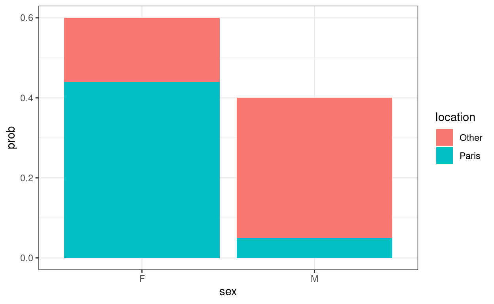
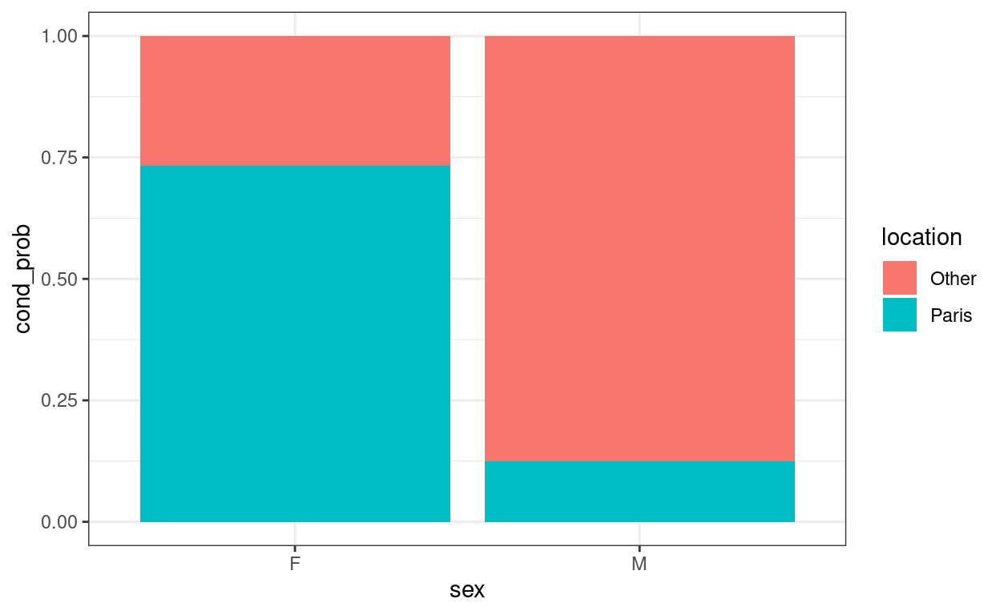
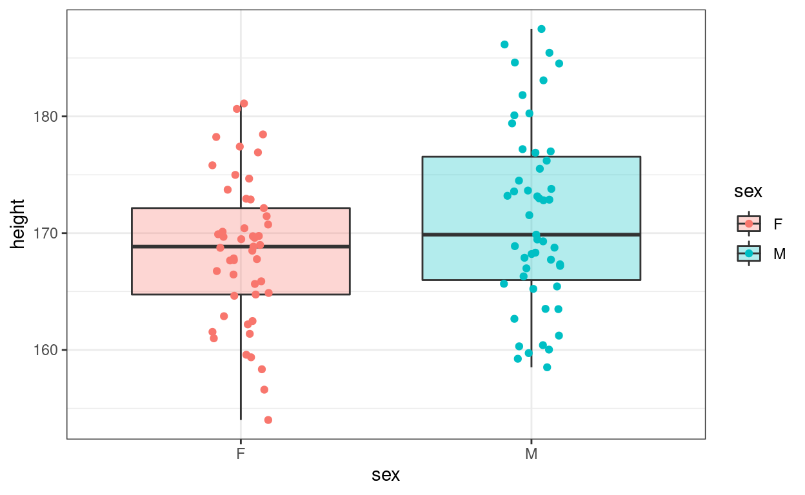
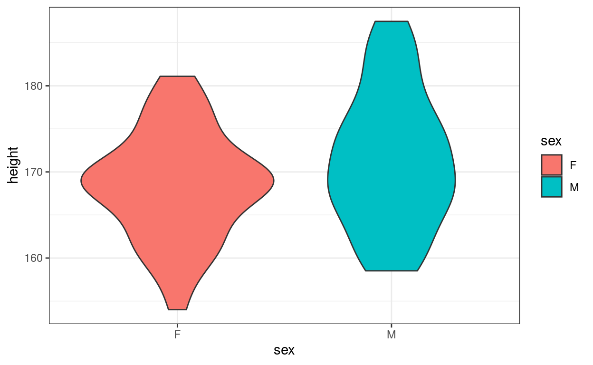
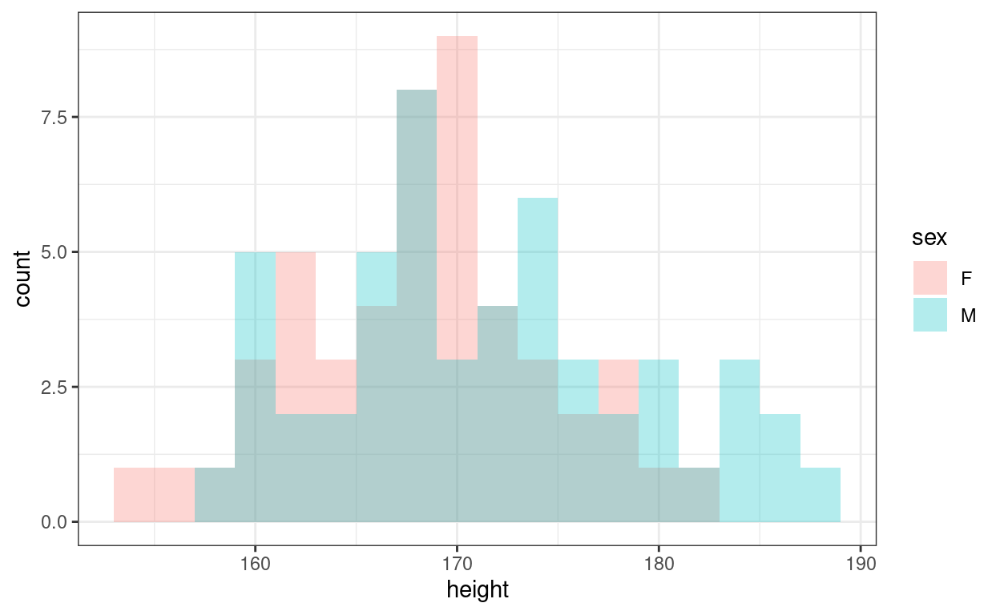
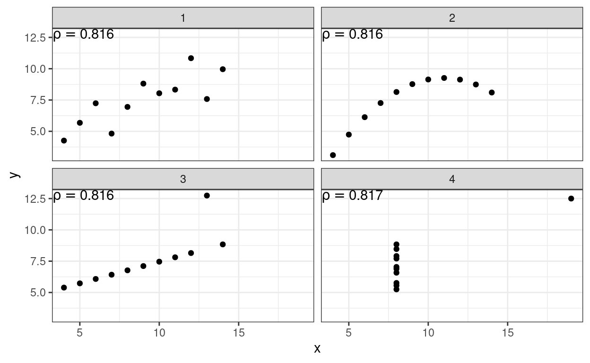

The goal of this class is to acquaint yourself with bivariate analysis. It’s a set of techniques and quantities that help you probe whether two quantities (measured on the same units) are associated or not. The two most common tools are
Those notions are covered in Tristan’s slides but as a quick reminder, remember that a quantity can be either qualitative or quantitative. There are thus three possible comparisons:
When comparing two qualitative quantities \(X\) and \(Y\) taking values in \(\{x_1, \dots, x_k\}\) and \(\{y_1, \dots, y_l\}\), and recorded on \(n\) units we need to compute the contingency table:
\[ \begin{array}{c|ccccc|c} & y_1 & \dots & y_j & \dots & y_l &\\ \hline x_1 & n_{11} & \dots & n_{1j} & \dots & n_{1l} & n_{1+} \\ \vdots & \vdots && \vdots && \vdots & \vdots \\ x_i & n_{i1} & \dots & n_{ij} & \dots & n_{il} & n_{i+} \\ \vdots & \vdots && \vdots && \vdots & \vdots \\ x_k & n_{k1} & \dots & n_{kj} & \dots & n_{kl} & n_{k+} \\ \hline & n_{+1} & \dots & n_{+j} & \dots & n_{+l} & n \end{array} \] where \(n_{ij}\) is the number of units for which \(X = x_i\) and \(Y = y_j\) and \(n_{i+} = \sum_{j=1}^l n_{ij}\) (respectively \(n_{+j} = \sum_{i=1}^k n_{ij}\)) is the number for which \(X = x_i\) (respectively \(Y = y_j\)). We can also compute its cousin, the joint distribution table:
\[ \begin{array}{c|ccccc|c} & y_1 & \dots & y_j & \dots & y_l &\\ \hline x_1 & p_{11} & \dots & p_{1j} & \dots & p_{1l} & p_{1.} \\ \vdots & \vdots && \vdots && \vdots & \vdots \\ x_i & p_{i1} & \dots & p_{ij} & \dots & p_{il} & p_{i.} \\ \vdots & \vdots && \vdots && \vdots & \vdots \\ x_k & p_{k1} & \dots & p_{kj} & \dots & p_{kl} & p_{k.} \\ \hline & p_{.1} & \dots & p_{.j} & \dots & p_{.l} & 1 \end{array} \] where \(p_{ij} = n_{ij} / n\) is the probability that a unit satisfies \(X = x_i\) and \(Y = y_j\) and the rest are the marginal probabilities \[ p_{i.} = \sum_{j = 1}^l p_{ij} = \frac{n_{i+}}{n} \quad \text{and} \quad p_{.j} = \sum_{i = 1}^k p_{ij} = \frac{n_{+j}}{n} \]
Roughly speaking, if the vector \((p_{ij})_{i=1\dots k}\) is very different from the vector \((p_{i.})_{i=1\dots k}\) for a given index \(j\) (or if the columns of the joint distribution table are very different), we say that \(X\) and \(Y\) are associated.
Likewise if \((p_{ij})_{j=1\dots l}\) is very different from the vector \((p_{.j})_{j=1\dots l}\) for a given index \(i\), or if the rows of the joint distribution tables are very different.
We now show how to compute those quantities on simple examples and how to visualize them.
Have a look at the pre-loaded toy_data_1 and toy_data_2 datasets where gender (sex), place of birth (location), height (height) and weight (weight) of two cohorts of 100 students are recorded:
toy_data_1
toy_data_2You can use table(x, y) to compute the contigency table of two quantities x and y.
table(...)"Use `toy_data_1$sex` and `toy_data_1$location`""Don't forget to divide by $n$ (or `nrow(toy_data_1)` here)."table(toy_data_1$sex, toy_data_1$location) / nrow(toy_data_1)Note that you can also use count() from the dplyr package to compute the same quantities in a slightly different format.
## contigency tables (long format)
toy_data_1 %>% count(sex, location) %>% mutate(prob = n / sum(n))Use ggplot() to represent the values of the contingency table using barplots. You can use count() instead of table() to get tidy summaries.
plot_data <- ...
ggplot(plot_data, ...)plot_data <- toy_data_1 %>% count(sex, location) %>% mutate(prob = n / sum(n))
ggplot(plot_data, ...)plot_data <- toy_data_1 %>% count(sex, location) %>% mutate(prob = n / sum(n))
ggplot(plot_data, aes(x = sex, y = prob, fill = location)) + ...plot_data <- toy_data_1 %>% count(sex, location) %>% mutate(prob = n / sum(n))
ggplot(plot_data, aes(x = sex, y = prob, fill = location)) + geom_col(position = "stack")When plotting the same graphics for `toy_data_2 we observe a problem: there are many more girls than boys in the dataset and it’s hard to compare the bars.
plot_data <- toy_data_2 %>% count(sex, location) %>% mutate(prob = n / sum(n))
ggplot(plot_data, aes(x = sex, y = prob, fill = location)) + geom_col(position = "stack")
We can fix this by plotting the conditional probabilities: for example, the probability that a student was born in Paris knowing she’s a girl, or in formal terms:
\[ \mathbb{P}(\{ \text{student born in Paris} \} \, | \, \{ \text{student is a girl} \}) = \frac{\mathbb{P}(\{ \text{student born in Paris} \} \cap \{ \text{student is a girl} \})}{\mathbb{P}(\{ \text{student is a girl} \})} \]
Try to compute those quantities using count(), group_by() and mutate()
toy_data_2 %>% count(sex, location) %>% mutate(prob = n / sum(n)) %>%
...toy_data_2 %>% count(sex, location) %>% mutate(prob = n / sum(n)) %>%
group_by(sex) %>% ...toy_data_2 %>% count(sex, location) %>% mutate(prob = n / sum(n)) %>%
group_by(sex) %>% mutate(cond_prob = prob / sum(prob))Reproducing the graph with the conditional probabilities makes it easier to read:

In particular, it’s quite obvious that there is an association between sex and location in toy_data_2: girls are more likely to be born in Paris and boys outside of Paris.
We’re now going to compare the gender (qualitative) and the height (quantitative). A very simple way to do so is to split the population into several subpopulations (one per gender) and to compute summary statistics (mean, variance, etc) on each subpopulation. We can then compute them across population (using for example a t-test).
Compute the mean height (and its standard deviation) of boys and girls in toy_data_1
toy_data_1 %>% ..."Use group_by() and summrize()"toy_data_1 %>% group_by(...) %>% summarise(...)toy_data_1 %>% group_by(sex) %>% summarise(mean = mean(height), sd = sd(height))toy_data_1)toy_data_2)One way of looking at the different heights in each subpopulations is to use boxplots, violinplots, histograms or densities. We illustrate the first three on toy_data_1 to emphasize that gender based differences are small.



Reproduce the previous graphs on toy_data_2. How do the genders compare?
ggplot(toy_data_2, aes(x = sex, y = height, fill = sex)) +
geom_boxplot(alpha = 0.3) + ## We used alpha to make the boxes transparent
geom_point(aes(color = sex),
position = position_jitterdodge(jitter.width = 0.2)) ## we added jitter to the points to avoid overcrowdingggplot(toy_data_2, aes(x = sex, y = height, fill = sex)) + geom_violin()ggplot(toy_data_2, aes(x = height, fill = sex)) +
## We added alpha to have transparent bars and change the default bin width
geom_histogram(position = "identity", alpha = 0.3, binwidth = 2)We’re now going to compare the height (quantitative) and the weight (quantitative). The most popular metric to compare two quantitative quantities is the correlation. We’ll recall its formal definition, learn how to compute it and finally give a word of caution about its limitations.
The covariance between two real-valued random variables \(X\) and \(Y\) is defined as:
\[ \sigma_{X,Y} = \mathbb{E}\left[ \underbrace{(X - \mathbb{E}[X])}_{\text{deviations of } X \\ \text{from } \mathbb{E}[X]} \times \underbrace{(Y - \mathbb{E}[Y])}_{\text{deviations of } Y \\ \text{from } \mathbb{E}[Y]} \right] = \mathbb{E}[XY] - \mathbb{E}[X]\mathbb{E}[Y] \]
\(\sigma_{X,Y}\) measures whether \(X - \mathbb{E}[X]\) and \(Y - \mathbb{E}[Y]\) move in the same direction at the same times, or in other words, if deviations of \(X\) and \(Y\) from their mean values are (linearly) associated.
If \(X\) and \(Y\) are discrete and take values in \(\{x_1, \dots, x_k\}\) and \(\{y_1, \dots, y_l\}\), the expectation is a sum: \[ \sigma_{X,Y} = \sum_i \sum_j (x_i - \mathbb{E}[X])(y_j - \mathbb{E}[Y]) \times \mathbb{P}(X = x_i,\, Y = y_j) \] whereas if they are continuous, it’s an integral: \[ \sigma_{X,Y} = \int_x \int_y (x -\mathbb{E}[X])(y - \mathbb{E}[X]) f_{X,Y}(x, y)dxdy \]
When we don’t have access to the full distribution but only to a sample of size \(n\), \((x_1, y_1), \dots, (x_n, y_n)\), we compute the empirical covariance where the expectations are replaced by plug-ins: \[ \hat{\sigma}_{X,Y} = \frac{1}{n}\sum_{i=1}^n (x_i - \bar{x})(y_i - \bar{y}) \] where \(\bar{x} = \frac{1}{n} \sum_{i=1}^n x_i\) and \(\bar{y} = \frac{1}{n} \sum_{i=1}^n y_i\).
Use cov() to compute the covariance of height and weight in toy_data_1:
cov(...)cov(x = toy_data_1$..., y = toy_data_1$...)cov(x = toy_data_1$height, y = toy_data_1$weight)To alleviate the scaling problem of the covariance mentionned previously, it’s customary to use the correlation instead defined as:
\[ \rho_{X, Y} = \frac{\sigma_{X,Y}}{\sqrt{\sigma_{X,X} \sigma_{Y,Y}}} \]
Looking at the formula, you can see that \(\sigma_{X,X}\) is the variance of \(X\) and \(\sqrt{\sigma_{X,X}}\) is thus its standard deviation which you can understand as a reference scale for \(X\). You can also notice that the correlation is invariant to affine transformations: \[ \forall (\lambda, \mu) \in \mathbb{R}^\star, \; \rho_{\lambda X, \mu Y} = \rho_{X,Y} \]
In other words, \(\rho_{X, Y}\) does not suffer from scaling issue and always takes values in \([-1, 1]\). It can be interpreted as follows:
Use cor() to compute the correlation of height and weight in toy_data_1:
cor(...)cor(x = toy_data_1$..., y = toy_data_1$...)cor(x = toy_data_1$height, y = toy_data_1$weight)In addition to computing the correlation coefficient, it is good practice to look at the data using a scatter plot. Use ggplot() to produce a scatter plot of height against weight.
ggplot(...)ggplot(toy_data_1, aes(x = height, y = weight)) + geom_point()Although the relationship is not perfectly linear, the graph is strongly indicative of a positive relationship between the height and the weight.
The correlation only reveals for linear relationships: it may miss genuine but non-linear relationships and/or be confused by non linear relationship as illustrated below.
## `summarise()` ungrouping output (override with `.groups` argument)
Congratulations ! You now have all the tools at your disposal to compare two quantities.
Remember to always have a look at your data, the computer is great for computing and plotting things but your eye is also a very efficient tool to detect patterns.